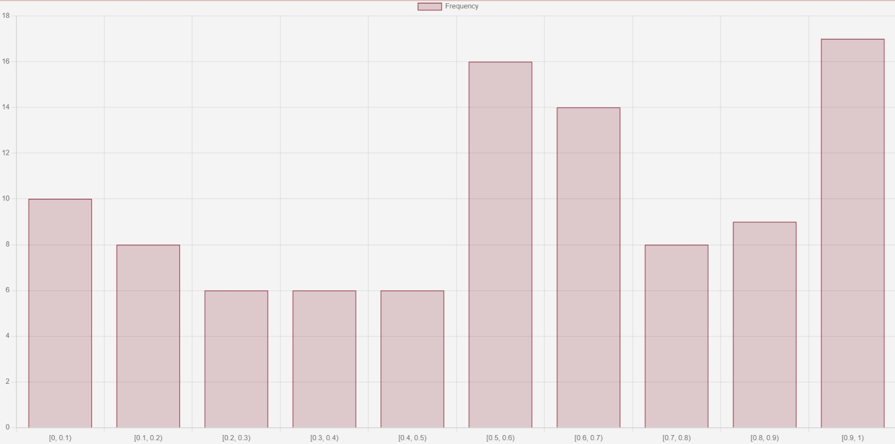
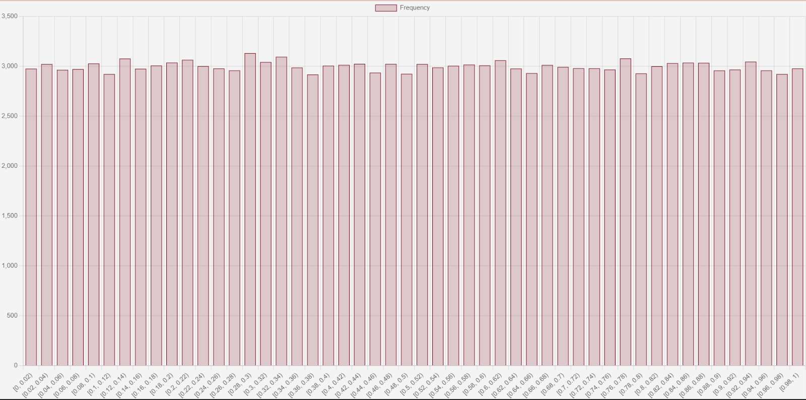

Generate N uniform random variates in [0,1) and determine the distribution into class intervals [i/k, (i+1)/k), i = 0,..., k-1.
Play with N and k values and draw some conclusion on the "shape" of the distribution.
Note: it is needed to reload the page if you want to plot a new histogram
I tested my script with various configurations, for instance, here is the histogram generate with inputs N = 100 and k = 10.

Below is the output of another run with N = 150000 and k = 50.

Click the following button to see the JavaScript code used to generate the histogram
function generate() {
var N = document.getElementById("N").value;
var k = document.getElementById("k").value;
var output = document.getElementById("output3");
output.innerHTML = "";
var randoms = [];
for (var i = 0; i < N; i++) {
randoms.push(Math.random());
}
var classIntervals = [];
for (var i = 0; i < k; i++) {
classIntervals.push([i / k, (i + 1) / k]);
}
var classFreq = {};
for (var i = 0; i < classIntervals.length; i++) {
classFreq[i] = 0;
}
for (var i = 0; i < randoms.length; i++) {
for (var j = 0; j < classIntervals.length; j++) {
if (randoms[i] >= classIntervals[j][0] && randoms[i] < classIntervals[j][1]) {
classFreq[j]++;
}
}
}
for (var i = 0; i < classIntervals.length; i++) {
output.innerHTML += "[" + classIntervals[i][0] + ", " + classIntervals[i][1] + "): " + classFreq[i] + " ";
}
// Create a histogram using Chart.js library
var ctx = document.getElementById('myChart').getContext('2d');
var myChart = new Chart(ctx, {
type: 'bar',
data: {
labels: classIntervals.map(interval => "[" + interval[0] + ", " + interval[1] + ")"),
datasets: [{
label: 'Frequency',
data: Object.values(classFreq),
backgroundColor: 'rgba(54, 162, 235, 0.2)',
borderColor: 'rgba(54, 162, 235, 1)',
borderWidth: 1
}]
},
options: {
scales: {
yAxes: [{
ticks: {
beginAtZero: true
}
}]
}
}
});
}
Click the following button to see the C# code used to generate the histogram
using System;
using System.Collections.Generic;
using System.Windows.Forms;
using System.Windows.Forms.DataVisualization.Charting;
class Program
{
static void Main()
{
int N = 100; // Replace with the value from your "N" input
int k = 10; // Replace with the value from your "k" input
Random random = new Random();
List randoms = new List();
for (int i = 0; i < N; i++)
{
randoms.Add(random.NextDouble());
}
List> classIntervals = new List>();
for (int i = 0; i < k; i++)
{
double start = i / (double)k;
double end = (i + 1) / (double)k;
classIntervals.Add(Tuple.Create(start, end));
}
Dictionary classFreq = new Dictionary();
for (int i = 0; i < classIntervals.Count; i++)
{
classFreq[i] = 0;
}
for (int i = 0; i < randoms.Count; i++)
{
for (int j = 0; j < classIntervals.Count; j++)
{
if (randoms[i] >= classIntervals[j].Item1 && randoms[i] < classIntervals[j].Item2)
{
classFreq[j]++;
}
}
}
// Create a Windows Forms application
Application.EnableVisualStyles();
Application.SetCompatibleTextRenderingDefault(false);
// Create a form and chart
Form form = new Form
{
Text = "Histogram",
Size = new System.Drawing.Size(600, 400)
};
Chart chart = new Chart();
chart.Size = new System.Drawing.Size(560, 320);
chart.Location = new System.Drawing.Point(20, 40);
// Create a chart area and add it to the chart
ChartArea chartArea = new ChartArea();
chart.ChartAreas.Add(chartArea);
// Create a series for the histogram
Series series = new Series();
series.ChartType = SeriesChartType.Column;
// Add data points to the series
foreach (var interval in classIntervals)
{
double xValue = (interval.Item1 + interval.Item2) / 2;
int yValue = classFreq[classIntervals.IndexOf(interval)];
series.Points.AddXY(xValue, yValue);
}
// Add the series to the chart
chart.Series.Add(series);
// Add the chart to the form
form.Controls.Add(chart);
// Show the form
Application.Run(form);
}
}